class: center, middle # Sequences, Attention and transformer Charles Ollion - Olivier Grisel .affiliations[    ] --- ## Reminder: Recurrent Neural Networks .center[ 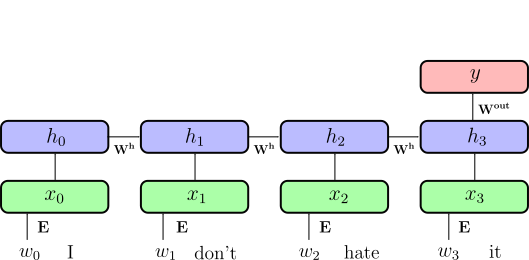 ] -- takes a sequence as input may output a single value, or a value for each time-step of the input --- ## Outline ### Encoder-decoder for machine translation -- ### Attention mechanisms -- ### Self-attention and Transformer --- class: center,middle # Encoder-Decoder for machine translation --- ## Encoder-Decoder .center[ 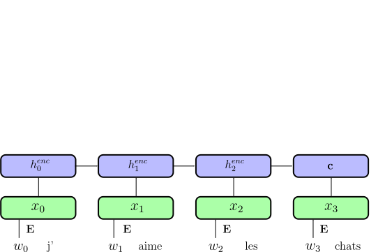 ] .footnote.small[ Cho, Kyunghyun, et al. "Learning phrase representations using RNN encoder-decoder for statistical machine translation." 2014 ] --- ## Encoder-Decoder .center[ 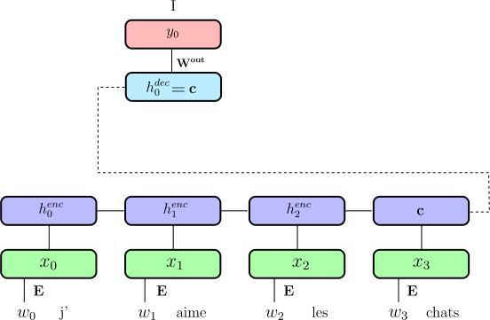 ] .footnote.small[ Cho, Kyunghyun, et al. "Learning phrase representations using RNN encoder-decoder for statistical machine translation." 2014 ] --- ## Encoder-Decoder .center[ <img src="images/encoder_decoder.svg" style="width: 680px;" /> ] .footnote.small[ Cho, Kyunghyun, et al. "Learning phrase representations using RNN encoder-decoder for statistical machine translation." 2014 ] --- ## Encoder-Decoder .center[ <img src="images/encoder_decoder_forcing.svg" style="width: 680px;" /> ] .footnote.small[ Cho, Kyunghyun, et al. "Learning phrase representations using RNN encoder-decoder for statistical machine translation." 2014 ] --- ## Sequence to Sequence .center[ <img src="images/basic_seq2seq.png" style="width: 760px;" /> ] .footnote.small[ Sutskever, Ilya, Oriol Vinyals, and Quoc V. Le. "Sequence to sequence learning with neural networks." NIPS 2014 ] -- - **Reverse input sequence** for translation - Special symbols for starting decoding and end of sentence -- Encoder and decoder can **share weights** (but more common to have separate weights) --- ## Large Vocabulary Size **Softmax** computation becomes **intractable** both at training and inference time (sum over $|V|$). -- **Negative Sampling** works well to learn word embeddings but is **not a good approximation** for **language modeling** and machine translation. -- Approximate softmax with **sampled softmax** (a.k.a. bucketing): - Accumulate train sequences in buckets $i \in B$ with $|V_i| ~= 50k$; - Sample bucket $i$ at random and train with regular softmax on $V_i$; - Share softmax parameters for words in common across buckets; - Iterate untill the end of the training set. ??? Sampled softmax (https://arxiv.org/abs/1412.2007): - Biased estimate, but works reasonably well in practice; - Also useful to train item embedding in RecSys. --- ## Alternative to Word Embeddings Character-level Embedding (possibly with a CNN layer) - (+) Much smaller vocabulary size - (+) No need for language specific segmentation (e.g. Chinese); - (+) Robust to spelling mistakes and out-of-vocabulary words; - (+) Can deal with mixed language contents. -- however - (-) Need to learn word structure from data; - (-) Decoding more complex and expensive. -- Sub-word representations and **Byte Pair Encoding** (BPE) are better ??? BPE (https://arxiv.org/abs/1508.07909): - Start with a vocabulary of characters (encoded as bytes); - Scan training set to compute most frequent char bigrams and replace them with a new single byte symbol; - Recurse until target vocabulary size is reached (hyper-parameter). --- class: center,middle # Attention Mechanism --- # Attention Mechanism Main problem with Encoder-Decoder: - A sentence may have different parts with different concepts - The **whole sentence** is represented as a **single vector** .center[ *I like cats but I don't like dogs* ] .footnote.small[ In depth explanation on https://blog.heuritech.com/2016/01/20/attention-mechanism/ ] -- <br/> Solution: - Use all outputs of the encoder $\{h_i\}$ to compute the outputs - Build an **Attention Mechanism** to determine which output(s) to attend to --- # Attention Mechanism .center[ 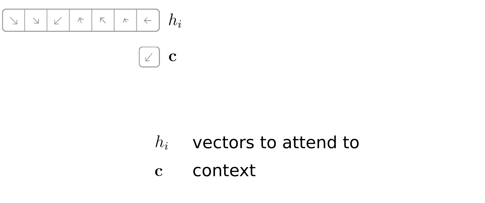 ] - Goal : select most relevant vector(s) given context $\mathbf{c}$ --- # Attention Mechanism .center[ 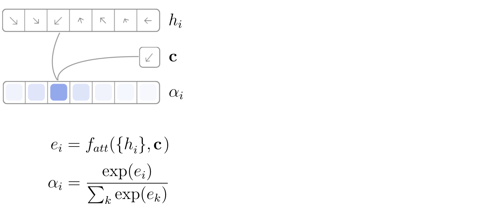 ] -- <br/> - $f_{att}$ may be a cosine similarity, a deep network, etc. - softmax enables to normalize and focus on very few items --- # Attention Mechanism .center[ 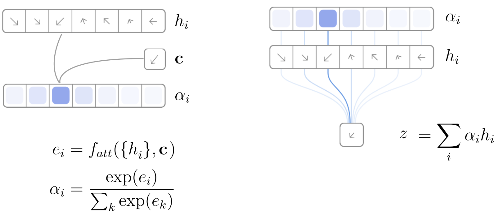 ] -- Compute a soft (differentiable) selection on a set of vectors --- # Attention Mechanism .center[ <img src="images/attention_0.png" style="width: 670px;" /> ] .footnote.small[ Neural machine translation by jointly learning to align and translate, D Bahdanau, K Cho, Y Bengio 2014 ] --- # Attention Mechanism .center[ 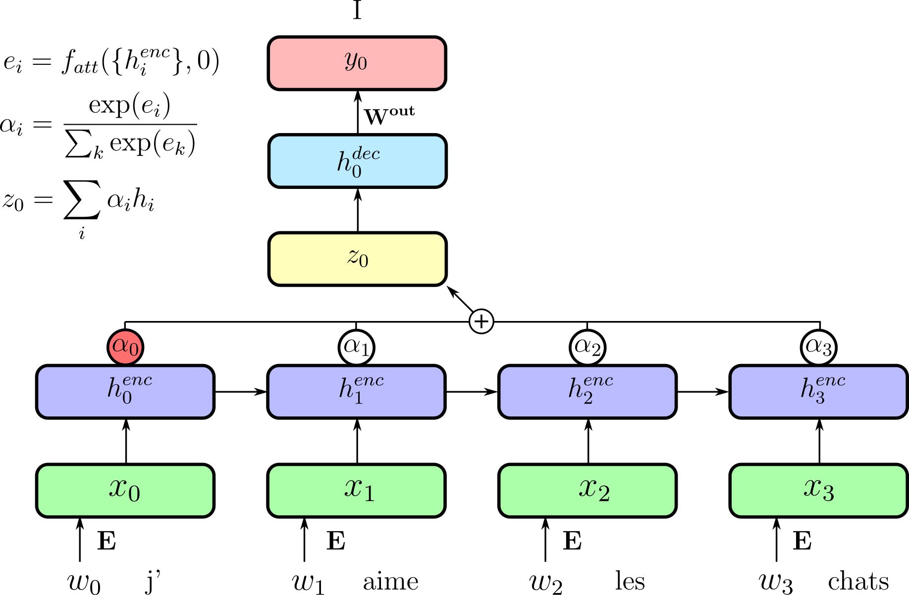 ] .footnote.small[ Neural machine translation by jointly learning to align and translate, D Bahdanau, K Cho, Y Bengio 2014 ] --- # Attention Mechanism .center[ 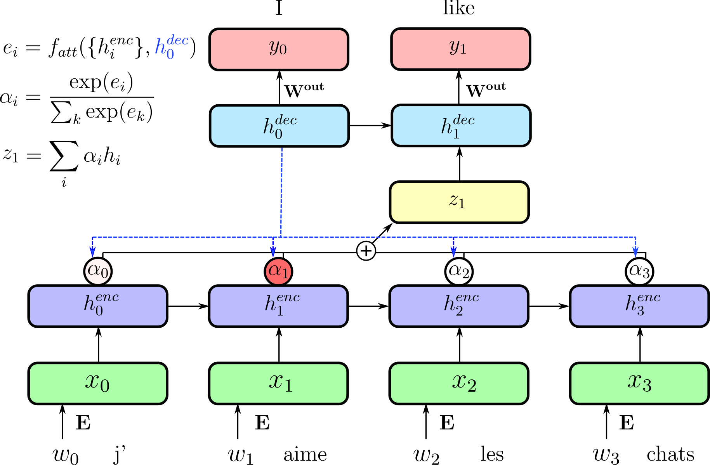 ] .footnote.small[ Neural machine translation by jointly learning to align and translate, D Bahdanau, K Cho, Y Bengio 2014 ] --- # Attention Mechanism .center[ 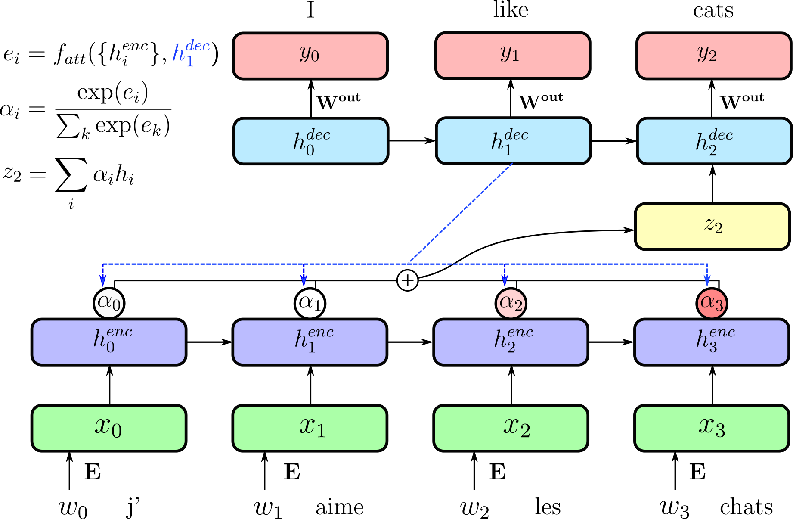 ] .footnote.small[ Neural machine translation by jointly learning to align and translate, D Bahdanau, K Cho, Y Bengio 2014 ] --- # Visualizing Attention .center[ <img src="images/align.png" style="width: 670px;" /> ] .footnote.small[ Neural machine translation by jointly learning to align and translate, D Bahdanau, K Cho, Y Bengio 2014 ] --- # The GNMT architecture (2016) .center[ 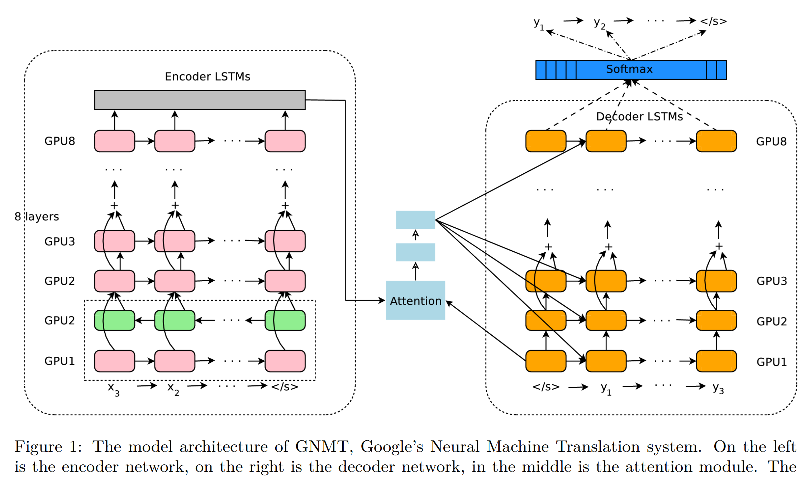 ] .footnote.small[ Yonghui Wu et al. "Google's Neural Machine Translation System: Bridging the Gap between Human and Machine Translation" ] ??? - bi LSTM - stack LSTM GPU - reLU - inference TPU --- # Image Captioning .center[ 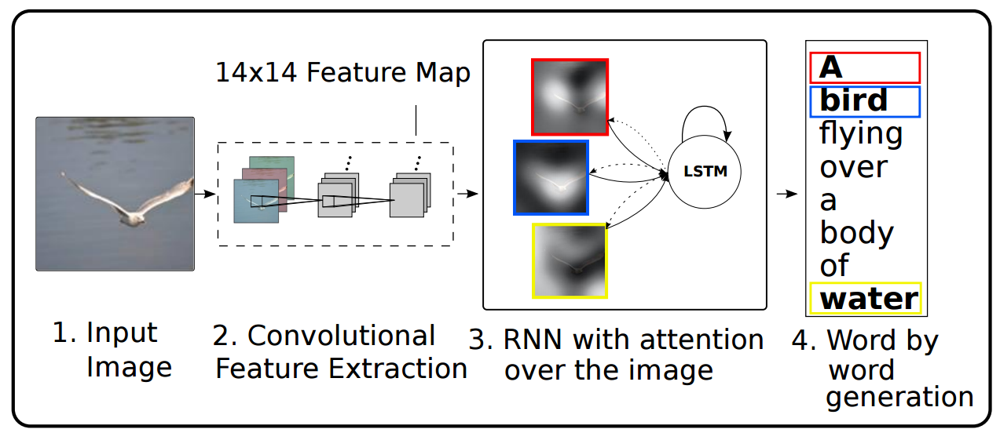 ] .footnote.small[ Xu, Kelvin, et al. "Show, Attend and Tell: Neural Image Caption Generation with Visual Attention." ICML. 2015 ] -- .center[ 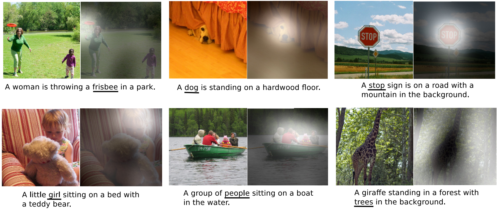 ] --- class: center, middle # Self-attention and transformer --- # Self-Attention For each element of an input sequence ${X_i}$ project into 3 vectors: <span style="color:blue">query</span>, <span style="color:red">key</span> and <span style="color:green">value</span> .center[ 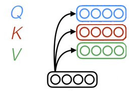 ] .footnote.small[ Attention Is All You Need Ashish Vaswani et al. NIPS 2017 ] -- For each element, compute attention over all other vectors $$SelfAttention(Q_i, \mathbf{K}, \mathbf{V}) = \sum_j softmax_j(\frac{Q_i \cdot \mathbf{K}^T}{\sqrt{d_k}}) V_j $$ --- # Single-head self-attention .center[ 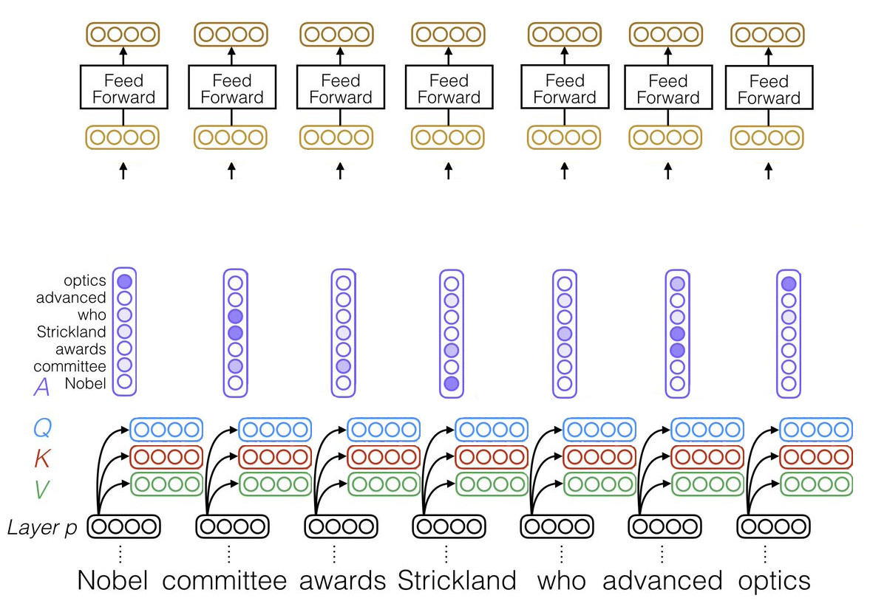 ] .footnote.small[ Adapted from Emma Strubell EMNLP 2018 ] --- # Multi-head self-attention .center[ 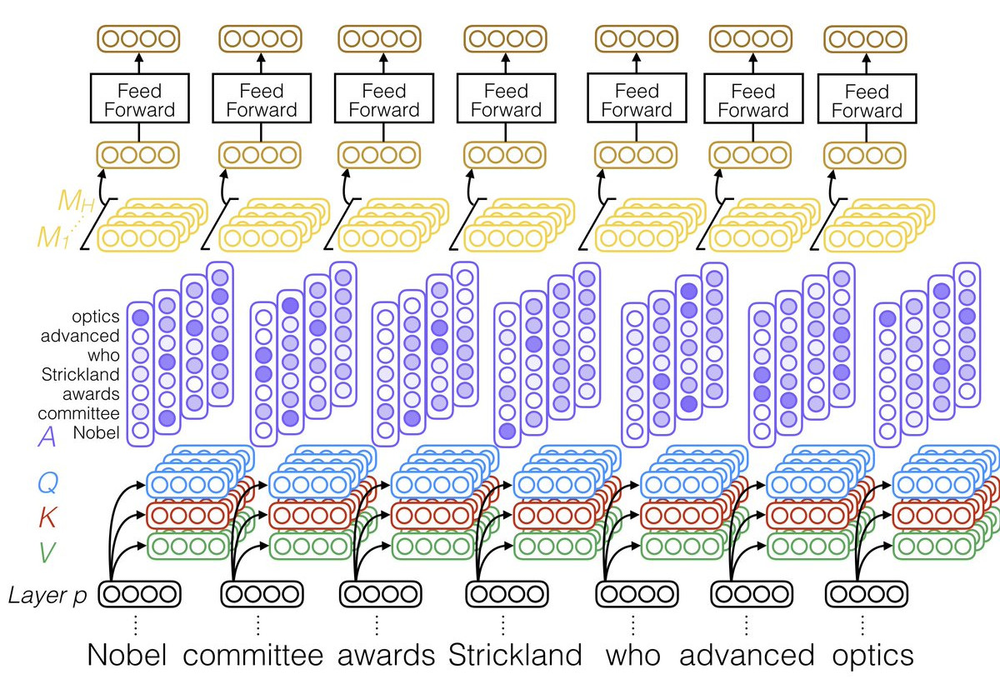 ] .footnote.small[ Adapted from Emma Strubell EMNLP 2018 ] --- ### Transformer Architecture .center[ 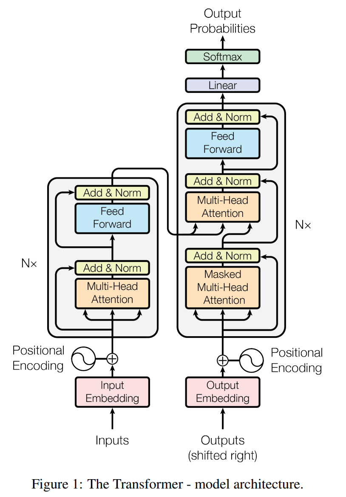 ] .footnote.small[ Attention Is All You Need Ashish Vaswani et al. NIPS 2017 ] --- # Transformer tricks No notion of word order. Positional encoding need to be added: .center[ 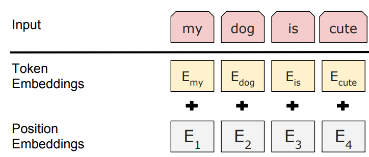 ] -- .center[ 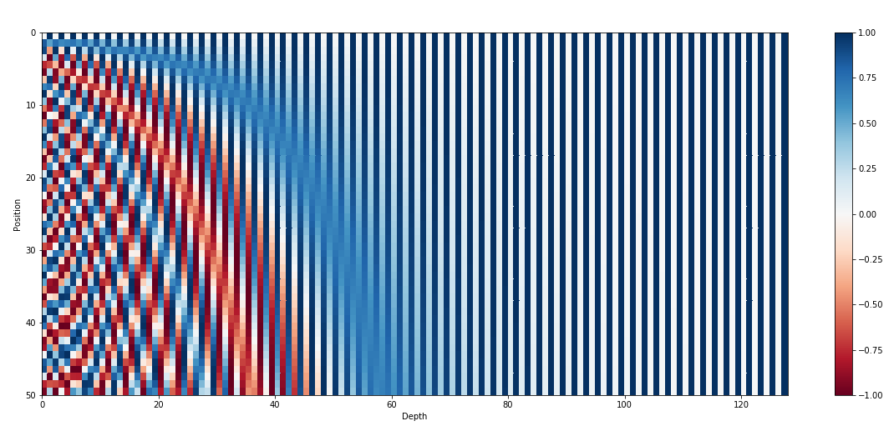 ] May also learn the embedding --- # Transformer based language models *Pretrained transformers* for transfer learning, like "ImageNet-pretrained convnets" for NLP .center[ 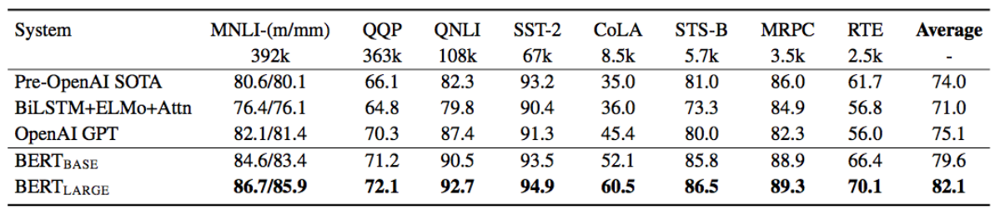 ] .footnote.small[ GLUE : a multi-task benchmark and analysis platform for natural language processing, Alex Wang et al. ICLR 2019 <br/> BERT : Pre-training of Deep Bidirectional Transformers for Language Understanding, Jacob Devlin et al. 2018 <br/> GPT2 : https://openai.com/blog/better-language-models/ ] -- Most recent models https://github.com/huggingface/transformers --- # BERT .center[ 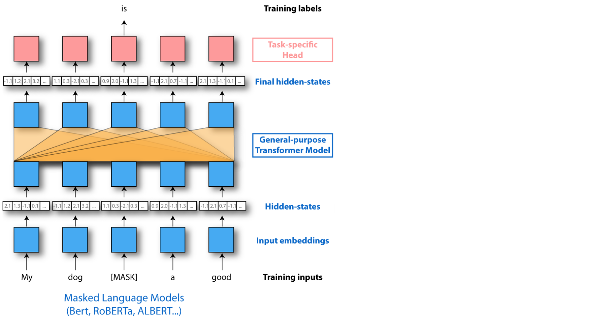 ] .footnote.small[ Slide from Thomas Wolf (HuggingFace) ] --- # BERT .center[ 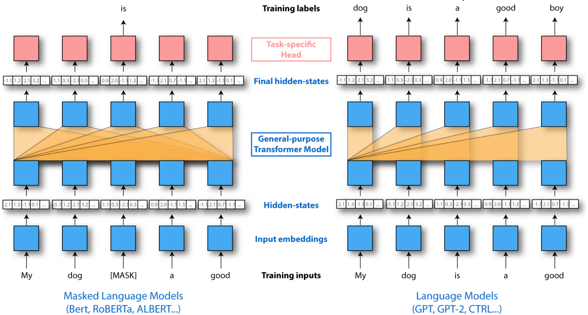 ] .footnote.small[ Slide from Thomas Wolf (HuggingFace) ] --- # BERT .center[ <img src="images/train_bert.png" style="width: 600px;" /> ] -- .center[ 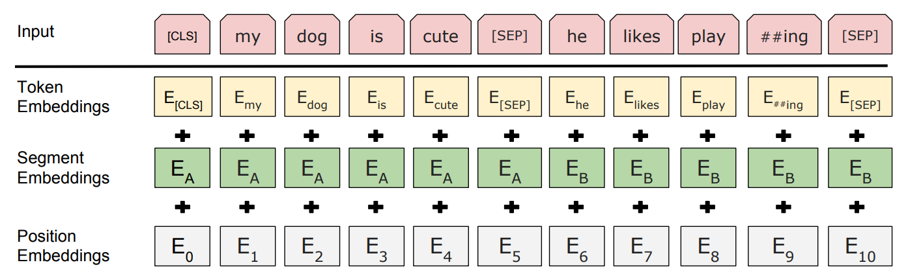 ] --- class: middle, center # Lab 5: back here in 15 min!